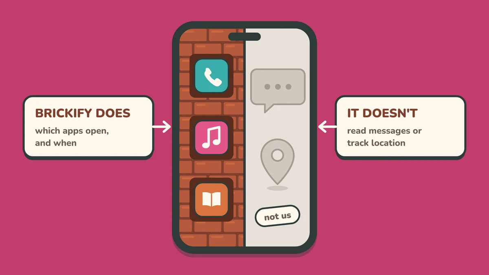

What Brickify does, and what it doesn't
Brickify does one job: it decides which apps a phone can open, and when. It doesn't read your child's messages and it doesn't track where they are. That's on purpose. Here's what it does, what it leaves alone, and the tools to use if you want those too.

What Brickify does
-
You choose the apps. Each profile allows exactly the apps you pick, and nothing else.
-
It runs on a schedule. Profiles switch by themselves: Brick for school, more open after school, Brick again at bedtime.
-
It turns any smartphone into a brick phone. Calls and texts only, on a phone you may already own.
-
Changes need you. Moving to a more open profile early needs your PIN, plus a second factor if you've set one up.
-
It grows with them. Open one app at a time as trust grows, with no new phone at each stage.
-
iPhone and Android. The same idea on both, including older phones.
What Brickify doesn't do
-
Read messages. It can't see what your child says or what's said to them.
See: Mean or worrying messages ↓ -
Track location. There's no map and no dot.
See: Where are they? ↓ -
Police what happens inside an allowed app. If WhatsApp is open, Brickify doesn't control who's in their chats.
See: Pictures they shouldn't see ↓ -
Replace the conversation. It holds the line you've agreed. It doesn't agree it for you.
On iPhone, deleting Brickify removes its restrictions. That's why setup asks you to set a Screen Time passcode, which stops apps being deleted without you. Please don't skip that step.
Where are they?
Location is the one thing your phone already does well, for free.
| Option | Cost | Works on | Good to know |
|---|---|---|---|
| Find My, through Family Sharing | Free | iPhone | Your child shares their location with you from their own phone. |
| Google Family Link | Free | Android | Shows the location of your child's supervised device. |
| Location-sharing apps such as Life360 | Free, with paid tiers | Both | Add extras like arrival alerts and driving reports. |
Our view
We left location out of Brickify on purpose. It's useful for a younger child getting about on their own. For an older teenager, we think being trusted to say where they are matters more than a dot on a map. A location app can tell you someone wasn't where they said. It can't make them tell you next time. So turn it on if it helps, and agree when it comes off.
Pictures they shouldn't see
Both iPhone and Android now blur nude images for children, built in and free.
| Option | Cost | Works on | Good to know |
|---|---|---|---|
| Communication Safety | Free | iPhone, iPad, Mac | Blurs photos and videos that may contain nudity, and warns your child. On by default for under-18s on current software. Under-13s need your Screen Time passcode to view. |
| Sensitive content warnings in Google Messages | Free | Android | On by default for supervised children. You control it in Family Link. |
Good to know: these cover images, not words, and they work inside the phone's own apps. You aren't sent an alert: the check happens on the phone and nothing is reported to you, Apple or Google.
Mean or worrying messages
Some apps alert you when a message looks like bullying or worse. Here's what that involves in the UK.
| Option | Cost | Works on | Good to know |
|---|---|---|---|
| Qustodio (Premium) | Annual subscription | iPhone and Android | Can show texts, and alerts you to worrying WhatsApp, Instagram, Snapchat and TikTok messages with a snippet. On iPhone, this needs a computer at home that stays on and on the same Wi-Fi. |
| Bark | — | Not available in the UK | Often recommended in American articles. It only supports the US, Australia and South Africa. |
| A "show me" agreement | Free | Any phone | If a message makes them feel bad, they show you, and nobody's in trouble for it. |
Our view
If messaging is your biggest worry, the simplest fix is timing: keep the messaging app on a later rung, open at set times you're around for. Pair it with the "show me" agreement. Alert apps can help, but they only flag what they recognise, and children who feel watched tend to move their chats somewhere you can't see.
Seeing everything
Some apps record the screen or copy every message to a parent. We don't recommend them. They turn a trust ladder into surveillance, and older children usually find a way round. If you're at that point, it's probably a conversation for school or a professional, not an app.